Released on November 19, 2008
(Next Release on November 26, 2008)
U.S. Offshore Oil Production Matters
Contrary to conventional wisdom about U.S. crude oil production, EIA’s November Short-Term Energy Outlook (STEO)
predicts U.S. crude oil production will increase 8 percent from 2008 to 2009. For example, the Petroleum Intelligence Weekly (PIW Nov.10, 2008, pg. 5), commenting on the likely future track of global production, said, “Accelerating decline rates in these two areas [the North Sea and North America] are widely expected to swamp growth from newer non-OPEC regions…”
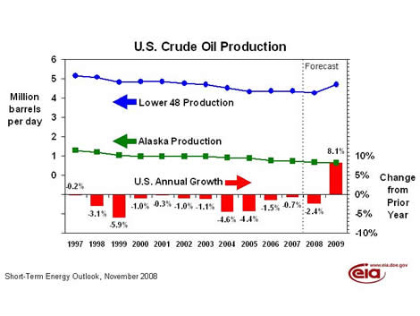
Offshore production from the federal Gulf of Mexico (GOM) is a major part of the STEO’s production story, projecting that it will make up two thirds of the overall U.S. increase in crude oil production in 2009. Some of the projected increase in offshore production reflects recovery from this year’s hurricanes, but over half arises from new production, not recovery. Overall, crude oil production from the GOM is projected to be 11 percent higher than in 2007, when there was little weather-related decline (U.S. Crude Oil Production).
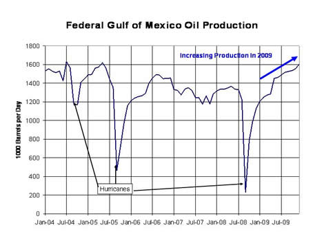
Continuing technological improvements have allowed greater production from deepwater sources. About 80 percent of both offshore production and proved reserves were from deepwater sources in 2007. EIA’s approach to estimating oil production in the GOM considers specific offshore platforms that are under development. Important contributors to the increase over the next two years are likely to be two new platforms from deepwater sources, Thunder Horse, expected to come on stream later this year, and Tahiti, expected late in 2009.
Given the overall resources available offshore the United States, production could increase in the long term as well. Proved reserves are the store of crude oil that is currently known with reasonable certainty to be economically recoverable. But proved reserves are only a fraction of the overall resources of oil that probably exists in the GOM. The larger the total of proved reserves and estimated resources compared to production, the more likely it is that production can increase over time. (The figures we use for estimated offshore resources are a Minerals Management Service mean estimate that includes how much crude oil has not yet been discovered but would be technically recoverable when it is discovered, as well as, resources that are known today but not yet classed as proved reserves.)
Proved reserves serve as the immediate inventory available for new production. Generally speaking, the more proved reserves there are compared to production – the reserves to production ratio - the more likely it is that production can increase in the short run.
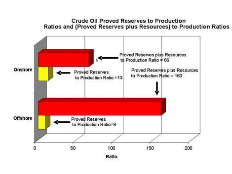
GOM proved reserves for crude oil fell slightly in 2007 (after doubling between 1992 and 2003), while production rose slightly. This lowered the reserves to production ratio for the Lower-48 Federal Offshore to 9, somewhat lower than for onshore reserves (13) – the yellow bars in Figure 3. But the offshore ratio of estimated resources (including proved reserves) to production (160) is much higher than the analogous onshore ratio (66) - the red bars in Figure 3. This implies that there is considerable potential for increasing GOM offshore production, especially over time. A majority of the offshore resources are in deep water and consequently farther offshore.
Nonetheless, it is important to understand that offshore resource estimates, and consequently, future production are inherently uncertain over both the long and the short run. Uncertainty in future production arises from the difficulty to assess future economic incentives, policy initiatives, and weather factors like hurricanes.
Residential Heating Fuel Prices See Another Round Of Decreases
Residential heating oil prices saw their sixth straight week of lower prices since the start of the heating season during the period ending November 17, 2008. The average residential heating oil price fell 10.0 cents last week to reach 284.1 cents per gallon, marking a decrease of 37.4 cents from this time last year. Wholesale heating oil prices tumbled another 16.4 cents lower, reaching 193.0 cents per gallon, which was a decrease of 72.2 cents compared to the same period last year.
The average residential propane price decreased 2.1 cents to reach 244.2 cents per gallon. This was an increase of 0.7 cent over the 243.5 cents per gallon average for this same time last year. Wholesale propane prices dropped 8.7 cents per gallon, falling from 92.9 cents to 84.2 cents per gallon. This was a decrease of 75.2 cents from the November 19, 2007 price of 159.4 cents per gallon.
Gasoline Prices Plunge Below $2 a Gallon in the Gulf Coast and Midwest
For the ninth consecutive week, gasoline prices fell in all regions of the country with the U.S. average price for regular gasoline tumbling another 15.2 cents to reach 207.2 cents per gallon. Not only has the U.S. average fallen 204.2 cents per gallon from the all-time high set on July 7 of this year, the price is now the lowest since March 14, 2005. On a regional basis, prices dropped below $2 a gallon in both the Midwest and Gulf Coast regions. In the Gulf Coast, the average price fell 14 cents to 195.6 cents per gallon; in the Midwest, the price shrank 12.7 cents to hit 193.3 cents per gallon, the lowest of any region. Although prices fell by more than 15 cents in each of the other three regions of the country, they remained above $2 a gallon. The average price on the East Coast slumped 15.8 cents to 211.4 cents per gallon. For the second consecutive week, the price in the Rocky Mountains dropped the most of any region, plunging 22.4 cents to 203.3 cents per gallon. The price on the West Coast fell for the twenty-first week in a row, plunging 17.7 cents to reach 235.7 cents per gallon. The price in California fell 18.1 cents, settling at 237.4 cents per gallon.
The U.S. average price for diesel fuel slid 13.5 cents to 280.9 cents per gallon, the lowest since June 18, 2007 and 60.1 cents less than the price a year ago. Prices continued to fall in all regions and have now dropped below the $3 mark in all major regions for the first time since September 17, 2007. The price on the East Coast slipped 13.6 cents to 292.4 cents per gallon. Although the prices in all three sub-regions of the East Coast fell, prices in the Central Atlantic and New England remained above $3 a gallon while the price in the Lower Atlantic dropped to 284 cents per gallon. Shrinking 12.4 cents, the price in the Midwest hit 276.4 cents per gallon. The average price in the Gulf Coast declined the most, plunging 15 cents to 274.5 cents per gallon, now the lowest regional price. Prices in the both the Rocky Mountains and the West Coast retreated 14.2 cents per gallon, settling at 282.2 cents per gallon in the Rocky Mountains and at 276.8 cents per gallon on the West Coast. In California, the average price weakened 15.9 cents to 275.4 cents per gallon.
Propane Inventories Up Slightly
The Nation’s primary supply of propane moved slightly higher last week, moving up a modest 0.1 million barrels to end the week of November 14, 2008 at an estimated 60.4 million barrels. Regional inventories showed mixed activity last week following a 0.3 million barrel gain in the Gulf Coast essentially offset by a 0.4 million barrel loss in the Midwest. While East Coast inventories edged higher by 0.1 million barrels last week, the combined Rocky Mountain/West Coast region remained unchanged during this same time. Propylene non-fuel use inventories increased by 0.1 million barrels and accounted for a 5.6 percent share of total propane/propylene inventories, up slightly from the prior week’s 5.5 percent share.
Text from the previous editions of “This Week In Petroleum” is now accessible through a link at the top right-hand corner of this page.
| Retail Prices (Cents Per Gallon) | |||||||
| 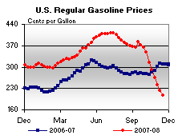 | 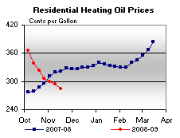 | ||||||
| 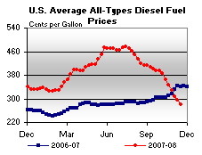 | 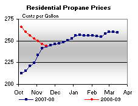 | ||||||
| Retail Data | Changes From | Retail Data | Changes From | ||||
| 11/17/08 | Week | Year | 11/17/08 | Week | Year | ||
| Gasoline | 207.2 | Heating Oil | 284.1 | ||||
| Diesel Fuel | 280.9 | Propane | 244.2 | ||||
| Spot Prices (Cents Per Gallon*) | |||||||||||||||||||||||||||||||||||
| 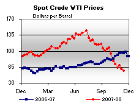 | 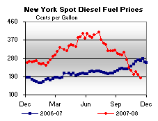 | ||||||||||||||||||||||||||||||||||
| 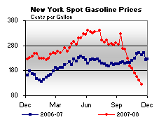 | 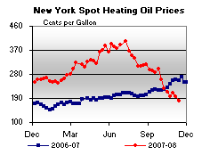 | ||||||||||||||||||||||||||||||||||
|
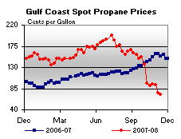 | ||||||||||||||||||||||||||||||||||
| *Note: Crude Oil WTI Price in Dollars per Barrel. | |||||||||||||||||||||||||||||||||||
| Stocks (Million Barrels) | |||||||
| 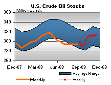 | 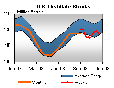 | ||||||
| 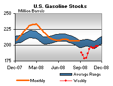 | 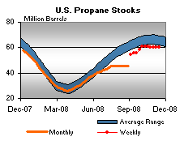 | ||||||
| Stocks Data | Changes From | Stocks Data | Changes From | ||||
| 11/14/08 | Week | Year | 11/14/08 | Week | Year | ||
| Crude Oil | 313.5 | Distillate | 126.9 | ||||
| Gasoline | 198.6 | Propane | 60.415 | ||||